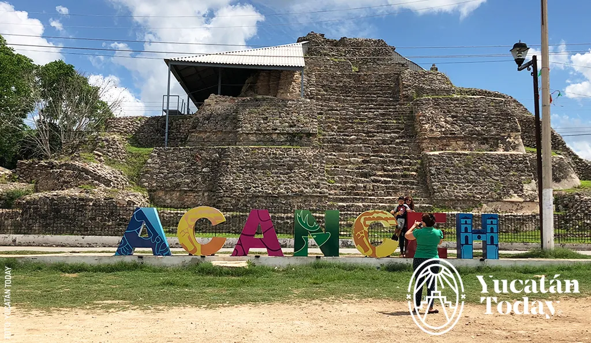

Reconocido por con un diseño arquitectónico único y sobresaliente, este lugar se encuentra dividido en tres secciones, Ah-Dzib, Ah-Canul y Ah-May, haciendo referencia a los apellidos de cada familia líder.
Uno de los principales atractivos de esta zona arqueológica es sin duda, el laberinto, sitio donde se realizaban ritos para los gobernantes en turno, pues al ingresar a la profundidad de su oscuridad se creía que descendían al inframundo para entrar en contacto con los dioses y amanecer al mismo tiempo que el sol, confirmando su divinidad.
Se localiza en la región más occidental del Puuc, a 70 km. al sur de Mérida, en el estado de Yucatán. Su acceso es por la carretera federal núm. 180, que se dirige a Campeche.
Sayil
Centro urbano de gran extensión, desarrollada entre los años 600 y 900 d.C. La distribución de la ciudad está conformada por tres zonas:
La primera es el núcleo del sitio ya que incluye los edificios de la élite;
La segunda, incluye residencias que alguna vez habitaron los antepasados;
La última zona, se extiende hacia los asentamientos satelitales de poblaciones que rendían tributo a Sayil.
En la fachada de sus edificios destaca la decoración de mosaico de piedra. Se podrá contemplar El Palacio, la construcción más notable de la zona, cuyo segundo nivel es decorado con mosaicos de la figura del Dios descendente, además en sus aproximadamente 70 habitaciones muestra la aparición de nuevas técnicas arquitectónicas.
Sayil se localiza a 33 km. al sureste de Uxmal por la carretera núm. 261; desviación a la derecha en el km. 34, y a 112 km. al sur de Mérida.
X'CAMBÓ
Xcambó se ubica dentro del tramo Uaymitún- Telchac y traducido al español, su nombre significa cocodrilo celestial o lugar donde se realizan trueques
Hace 2,500 años esta zona se impulso comercialmente gracias a la producción de sal que se convirtió en la actividad principal y actualmente se mantiene en constante trabajo.
Este antiguo asentamiento maya esta conformado por una plaza central que tuvo 11 edificios en aquellos años, las construcciones fueron labrados de piedra con arreglos especiales. De igual forma se pueden contemplar los Templos de la Cruz y el Templo de los Sacrificios.
Una actividad muy popular que se realiza cada año, es la peregrinación de feligreses a la capilla de las ruinas mayas, pues los católicos celebran el Milagro de la Virgen, donde se dice que hubo una aparición religiosa
Kinich Kak Moo
A tan sólo una hora de la ciudad de Mérida, dentro del Pueblo Mágico de Izamal, existe un sitio que te sorprenderá con su acervo prehispánico y que además se combina con la arquitectura del virreinato de la ciudad.
En tu recorrido por la plaza encontrarás la edificación del convento franciscano, una de las primeras edificaciones de los españoles a su llegada a este lugar y edificada sobre un basamento nombrado como Ppap Hol Chak.
En los alrededores de Izamal encontrarás la pirámide más grande en superficie de la Península de Yucatán: ¨Kinich Kak Moo¨, es un templo dedicado a la deidad solar. En los costado oriente y poniente del convento se encuentran dos edificios dedicados al dios "Zamna" que significa dios de la sabiduría, las pirámides de Itzamatul y Kabul, y al sur de la ciudad encontrarás la zona arqueológica de Izamal con edificios como ¨El conejo¨, ¨Habuk¨ y Challún Ha, un antiguo e importante centro religioso maya.
Mayapán
Reconocido por con un diseño arquitectónico único y sobresaliente, este lugar se encuentra dividido en tres secciones, Ah-Dzib, Ah-Canul y Ah-May, haciendo referencia a los apellidos de cada familia líder.
Uno de los principales atractivos de esta zona arqueológica es sin duda, el laberinto, sitio donde se realizaban ritos para los gobernantes en turno, pues al ingresar a la profundidad de su oscuridad se creía que descendían al inframundo para entrar en contacto con los dioses y amanecer al mismo tiempo que el sol, confirmando su divinidad.
Se localiza en el noroeste del estado de Yucatán, en el municipio de Tecoh, a unos 40 kilómetros de distancia de la ciudad de Mérida, la capital del estado.
Ek Balam
Ek Balam, poseedor de majestuosas construcciones ocultas entre grandes árboles, es un sitio diferente a todos los del área maya y no se parece a ningún otro sitio arqueológico conocido.
Su historia comienza aproximadamente desde el año 300 a.C., hasta la llegada de los españoles. Fue capital del imperio de Tah, al que rendían tributo los pueblos de la zona oriente del Estado, incluyendo parte de la costa, como lo prueban ofrendas de conchas que han sido encontradas. Abarcó unos 12 km2, que incluía un espacio central sagrado de poco más de 1 km2 donde residía la élite, protegido y delimitado por 3 murallas. Estas tenían 5 entradas, donde desembocaban igual número de caminos prehispánicos o sacbés (sak bé oob).
Fue una capital con gran riqueza, con una población de 12 a 18 mil habitantes en su núcleo principal. Se dice que fue fundada por un señor llamado Ek’ Balam o Coch Cal Balam, quien llegó desde el Oriente y gobernó los primeros 40 años.
Posee 45 estructuras y está rodeada por dos murallas concéntricas de piedra, y otra más que une a los edificios centrales. Estas murallas tuvieron fines defensivos y para el control del acceso. Tiene un juego de pelota y un arco muy hermoso donde desembocaba un sacbé (camino sagrado), que en épocas antiguas conectaba a los reinos mayas; también hay estelas y las llamadas serpientes jeroglíficas, monumentos bellamente labrados en bloques de piedra. Las estructuras tienen varios estilos arquitectónicos, pero hay detalles que las hacen únicas, como imágenes con alas que semejan ángeles.
Dzibilchaltún
Considerada una de las ciudades mayas más antiguas, cuyo nombre significa “el lugar donde hay escritura en las piedras planas”. Dzibilchaltún reúne en un sólo sitio a una ciudad prehispánica, un parque eco-arqueológico y el Museo del Pueblo Maya,que alberga vestigios mayas y españoles, desde objetos de barro hasta pinturas, armaduras y armas españolas, varias estelas mayas, piedras y dinteles tallados en excelentes condiciones. También cuenta con una capilla franciscana del siglo XVI, que se encuentra justo al centro de la ciudad maya.
La zona arqueológica de Dzibilchaltún se localiza a 12 kilómetros al norte de la ciudad de Mérida, Yucatán.
Acanceh
Acanceh es uno de los sitios arqueológicos más importantes del norte de Yucatán. Su nombre significa Gemido de venado; se compone de las palabras mayas akam gemido, y de keh venado. Un núcleo de montículos situados en el corazón de la población actual son conocidos como el sitio arqueológico de Acanceh, de los cuales destacan por su monumentalidad y materiales empleados en su edificación, La Pirámide y El Palacio de los Estucos.
Este último se distingue por el friso pintado con diversos colores y bello decorado con motivos antropomorfos modelados El sitio arqueológico está ubicado en el pueblo de Acancéh. Se localiza a 35 kilómetros al sureste de la ciudad de Mérida. Se llega siguiendo la carretera estatal 18.

Xlapak
El nombre Xlapak significa muros viejos, viejas murallas o pared vieja. Es uno de los sitios arqueológicos mayas menos restaurados de la región. Posee tres pirámides en trabajos de restauración y 14 estructuras generales que permanecen como montículos. Algunas ruinas en trabajo muestran arcos mayas integrados a las mismas.
Su mayor atractivo es el Palacio, estructura de firme simetría y detalles mosaicados en su fachada. En el sitio sobresalen mascarones de Chaac adornando las esquinas de la edificación. Este albergaba una máscara de Chac, el Dios de la lluvia.
Xlapak se localiza a 38 km. al sureste de Uxmal por la carretera núm. 261 y entronque a la izquierda con la carretera estatal núm. 31, y a 113 km.
Xlapak se distingue entre las ciudades del Puuc por la simetría y fina decoración de las fachadas de las antiguas residencias. Solamente tiene tres edificios restaurados. Los conjuntos principales del sitio están asociados con cuevas y chultunes y muy posiblemente este aspecto debió marcar de alguna manera el patrón de asentamiento.
Labná
Durante esta época de esplendor los centros económicos y políticos más importantes de la región fueron: Uxmal, Sayil y Kabah, que junto con Oxkintok, Labná y Nohpat parecen haber controlado la totalidad de la cordillera del Puuc, así como algunas porciones de las planicies del norte; se presume que el esquema de organización socio-política básica era el de grandes centros autónomos, ya con una plena organización estatal; parece claro que estos asentamientos centralizaban en un grado muy alto la mayoría de las funciones de la región.
Está situada a 120 kilómetros al sureste de la ciudad de Mérida. El acceso es por la carretera federal 261.
Loltún
México. Loltún, que en maya significa "Flor de Piedra", es conocida por sus impresionantes cuevas subterráneas y pinturas rupestres. Estas cuevas fueron utilizadas por antiguas civilizaciones mayas para diversos propósitos, incluyendo rituales religiosos y como refugios en tiempos de guerra. El sitio es famoso por sus formaciones geológicas únicas y su valor histórico y arqueológico. Los visitantes pueden explorar las cuevas y aprender sobre la rica historia de la región en este fascinante lugar.
Se encuentra a 110 kilómetros al suroeste de la ciudad de Mérida, y también se encuentra a una distancia de 10 km. al sur del poblado de Oxkutzcab.
Uxmal
Uxmal es famosa por su arquitectura monumental de estilo maya puuc, que incluye pirámides, palacios y templos impresionantes. Uno de los edificios más icónicos es la Pirámide del Adivino, que se destaca por su forma ovalada inusual.
El sitio de Uxmal es conocido por su elaborada ornamentación escultórica, que incluye figuras de serpientes emplumadas y otras representaciones simbólicas de la mitología maya. Además de su belleza arquitectónica, Uxmal también es famosa por su avanzado sistema de canalización de agua, que demostró la capacidad técnica de los antiguos mayas.
Uxmal es un sitio importante para entender la civilización maya y su historia, y ha sido declarado Patrimonio de la Humanidad por la UNESCO debido a su significado cultural y arqueológico. Los visitantes pueden explorar las ruinas y aprender sobre la rica herencia cultural y arquitectónica de la región en este impresionante sitio arqueológico. El sitio se encuentra a 78 kilómetros al suroeste de la ciudad de Mérida.
Kabah
Kabah es conocida por su arquitectura monumental de estilo puuc, que es característica de la región y comparte similitudes con otros sitios arqueológicos cercanos como Uxmal.
Uno de los elementos más destacados de Kabah es el Palacio de las Máscaras, que recibe su nombre debido a las numerosas máscaras de la deidad Chaac (dios de la lluvia) que decoran la fachada del edificio. Estas máscaras esculpidas son ejemplos impresionantes de la habilidad artística y la iconografía maya.
Kabah también cuenta con una gran plaza ceremonial, arcos de triunfo y un conjunto de edificaciones que muestran la complejidad de la arquitectura y la planificación urbana de la civilización maya. El sitio es un testimonio de la sofisticación cultural y arquitectónica de esta antigua civilización.
En Mérida se toma la carretera 261 con rumbo a Campeche; después de recorrer 101 kilómetros, se llega a esta zona arqueológica.
Chacmultún
El nombre "Chacmultún" significa "Montículos de los rostros tallados" en maya, haciendo referencia a las esculturas de rostros humanos esculpidas en la fachada de algunos de los edificios. Estas esculturas son una característica distintiva del sitio y muestran la destreza artística de los antiguos mayas.
Chacmultún cuenta con una serie de estructuras, plazas y una pirámide escalonada. Aunque el sitio es más pequeño en comparación con otras zonas arqueológicas mayas, ofrece a los visitantes una visión intrigante de la civilización maya y su arquitectura.
Este sitio arqueológico es una opción menos concurrida para aquellos que desean explorar la herencia cultural y arqueológica de la región de Yucatán de una manera más tranquila y contemplativa.
El sitio se encuentra a 130 kilómetros al sureste de la ciudad de Mérida. Para acceder se toma la carretera federal 180. Al llegar a Tekax, deber conducirse a las comunidades de Canek, Kancab y Chacmultún.
Balamcanché
El nombre "Balancanché" se traduce como "La Cueva del Jaguar" en maya, y la cueva es una de las características más destacadas del sitio. En su interior, se encuentran estalactitas y estalagmitas impresionantes, así como evidencia de actividades ceremoniales y rituales mayas. Se cree que esta cueva fue un lugar sagrado para los antiguos mayas y que se utilizó en ceremonias religiosas.
El sitio también contiene una serie de petrograbados y figuras esculpidas en las rocas que representan elementos de la mitología y la religión mayas. Estos grabados y esculturas ofrecen una ventana al mundo espiritual de los mayas y a su rica herencia cultural.
Balancanché es un destino interesante para aquellos que desean explorar la misteriosa relación entre los mayas y las formaciones geológicas naturales en la región de Yucatán, ofrece una perspectiva única de la cultura y las creencias de esta antigua civilización.
En la ciudad de Mérida, Yucatán, se toma la carretera 180, vía Valladolid, y a 400 metros del kilómetro 123, sobre la margen izquierda, se toma una desviación que conduce al sitio. La Zona Arqueológica Balamcanché se encuentra a 6 kilómetros de Chichén Itzá.
Chichén Itzá
Los libros indígenas escritos al principio de la Conquista, relatan que Chichén Itzá fue fundada por los itzaes, un pueblo maya-chontal venido del oeste; su nombre significa, la ciudad al borde del pozo de los itzaes. La zona tuvo una larga ocupación que principió antes de la era cristiana, pero fue hasta el final del periodo Clásico cuando el sitio adquirió las proporciones y características urbanas que hoy admiramos. Entre las principales construcciones encontramoos: la Iglesia, el Akab-Dzib, la Casa Colorada, la Casa del Ciervo y el Edificio de las Monjas, el Juego de Pelota, El Caracol, los templos de los Jaguares y del Hombre Barbado.
Chichén Itzá fue declarada Patrimonio de la Humanidad por la UNESCO y es considerada una de las Nuevas Maravillas del Mundo. Es un destino turístico muy popular debido a su belleza arquitectónica, su rica historia y sus significados culturales y religiosos.
Aké
El nombre "Aké" significa "lugar de la tortuga" en maya, y el sitio se caracteriza por sus antiguas estructuras arqueológicas, incluyendo un templo piramidal conocido como "El Palacio". Este templo destaca por su fachada escalonada y sus decoraciones esculpidas, que muestran influencias arquitectónicas puuc, características de la región.
Otro elemento distintivo de Aké es su sacbé, que es una calzada antigua de piedra que conecta varios edificios y que era utilizada por los mayas para fines ceremoniales y como medio de comunicación en la antigüedad.
Aunque Aké es más pequeño que algunos de los sitios arqueológicos mayas más famosos de la región, ofrece a los visitantes una oportunidad de explorar ruinas históricas en un entorno menos concurrido y tranquilo. Esto permite una experiencia más íntima y contemplativa de la cultura y la historia maya.
Está situada a 35 kilómetros de la ciudad de Mérida, y el acceso es por la carretera federal 80 que conduce a la población de Tixkokob.